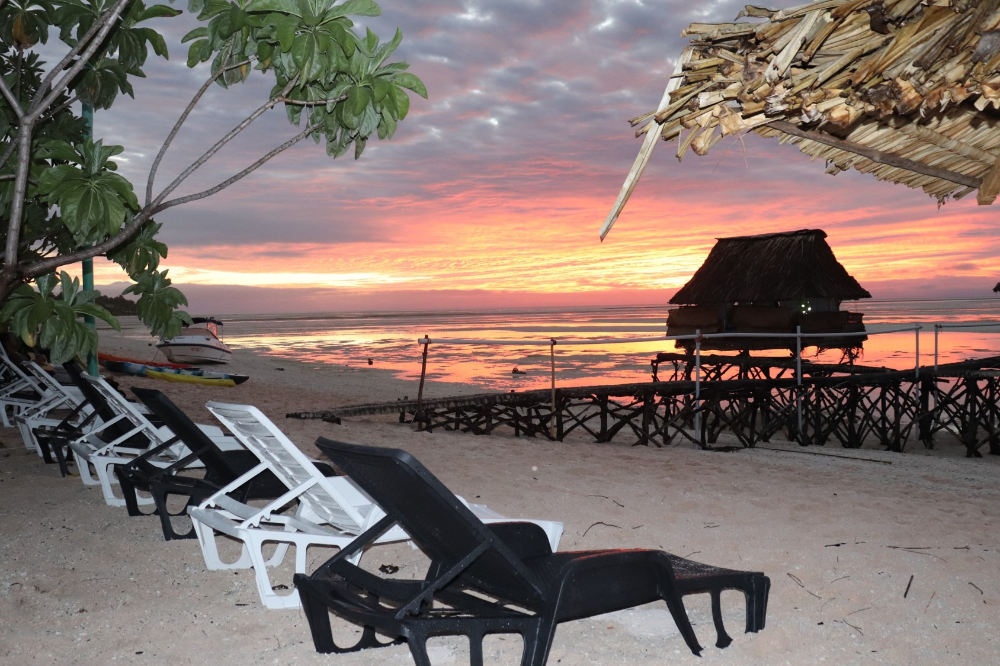

North Tarawa is one of the island in Kiribati that known as Tarawa I eta. Tarawa I eta is closed to the the main island where most tourist visit often. I choose this place because of tourism. There are lots of guest house that where built on this island because of a good enviroments and peacfulness. On this island, you can easily find traditional food and traditional occasions.
This is another resort that was built in the middle of North Tarawa. I chose this picture because most people love there to spend their holiday. When you are on this island, you can catch a beautiful sunrise, sunset from it. It is a good place for family vacation. It is a quiet and distress placefor those who need to recover. Nemat resort is one of the famous resort on Tarawa I eta (North Tarawa)